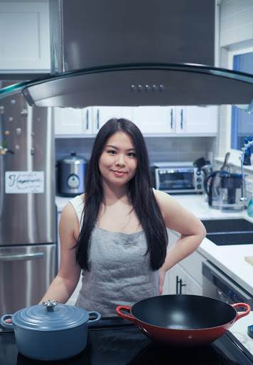

Mandy
About
Hello, my name is Mandy, and I love cooking and having fun!
I was born and raised in Los Angeles, California -- specifically
the San Gabriel Valley -- where there is an abundance in the different
types of cuisines. I loved everything from the piping hot bowls
of Bún Bò Huế to the elote and chicharrón
snacks sold by cart vendors outside my elementary school. Then, I moved
in my teens to Kuala Lumpur, Malaysia, where I attended international
school meeting friends from all around the world and got to experience a
whole new culture and cuisine, which can be described as a combination of
Malay, Indian, and Chinese flavors intertwined. With more than half
of my family in the food business there, many yummy treats were waiting
for me, always! It is the love and joy I have for delicious foods that I hope
to share with you, from my heart (and kitchen) to yours.
You can read more about my family history and culinary point-of-view here.